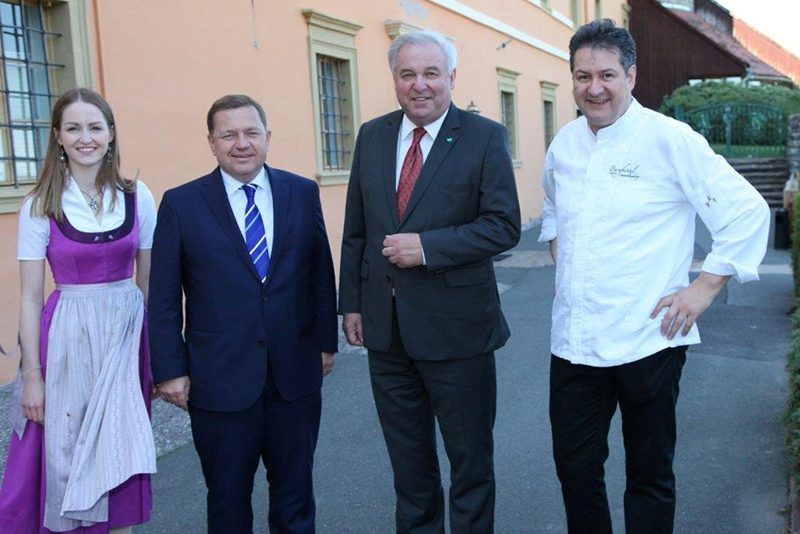
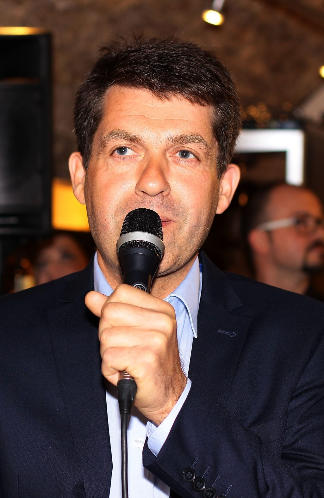

Seminarraum „Liechtenstein“
Der kompakte Raum für Besprechungen, Workshops und Klausuren.
Miete € 90,00 pro TagAnlässe
Ihre Burg Landsberg bietet zahlreiche Veranstaltungsräume für Ihre geplanten Events. Ob Seminare, Vorträge, Tagungen, Konferenzen, Besprechungen oder Incentives – hier wird Ihre Veranstaltung zum Erfolg. Auch bei Familienfeiern, im großen wie im kleinen Rahmen, bieten wir Räumlichkeiten und den entsprechenden Service.
Hochzeiten
Feiern Sie Ihren „schönsten Tag im Leben“ in einer stilvollen, historischen und romantischen Umgebung. Sie fragen sich, wo Sie das alles auf einmal finden? Hier bei uns, auf der Burg Landsberg.
Auf der Burg haben Sie die Möglichkeit, Ihre standesamtliche Trauung durchzuführen – entweder auf unserer Burgwiese im Freien oder im Burgmuseum. Im Anschluss stoßen Sie mit Ihren Gästen mit einem Glas Sekt an und nehmen die Glückwünsche entgegen. Danach fahren Sie zur kirchlichen Trauung ins Stadtzentrum zur Stadtpfarrkirche oder zur Ulrichskirche in Frauental.
Falls Sie nur standesamtlich heiraten, können Sie das Anschneiden der Hochzeitstorte auf den Nachmittag vorverlegen, um danach im Rittersaal das Hochzeitsmenü einzunehmen und mit Ihren Gästen bis in die frühen Morgenstunden zu feiern.
Gerne sind wir Ihnen bei Organisation und Planung behilflich und stehen Ihnen mit Rat und Tat zur Seite. Auf Wunsch kümmern wir uns auch um die Details wie Menükarten, Hochzeitstorte, Friseurtermin und, und, und …
Fragen? info@burg-deutschlandsberg.at oder +43 3462 5656. Bewertungen zur Hochzeitslocation finden Sie auf hochzeits-location.info.

Seminare
Alle Seminarräume verfügen über Tageslicht und sind mit Standardtechnik ausgestattet: 1 Leinwand, 1 Flipchart, 1 Pinwand und 1 Beamer.
Der kompakte Raum für Besprechungen, Workshops und Klausuren.
Miete € 90,00 pro TagDer große Raum für Tagungen, Vorträge und Konferenzen – auch für Trauungen geeignet.
Miete € 250,00 pro TagÜbernachtung dazu? Ihre Teilnehmerinnen und Teilnehmer wohnen direkt im Haus: 24 Doppel- und 2 Einzelzimmer, Einzelzimmer ab € 75,00, Halbpension € 39,00 pro Person. Details unter Zimmer & Preise.
Kontakt für Seminare: info@burg-deutschlandsberg.at

Familien- und Betriebsfeiern
Feiern Sie Ihre privaten Feste oder Betriebsfeiern in stilvoller und zugleich romantischer Umgebung. Lassen Sie sich verwöhnen und genießen Sie ein paar Stunden fernab vom Alltag auf der Burg Landsberg.
Ja – entweder auf der Burgwiese im Freien oder im Burgmuseum.
Der Wappensaal fasst bis zu 100 Personen, das Biedermeierstüberl bis zu 20. Für Seminare stehen Räume für bis zu 20 bzw. 70 Personen zur Verfügung.
Seminarraum „Liechtenstein“ € 90,00 pro Tag, Seminarraum „Burgmuseum“ € 250,00 pro Tag – jeweils mit Tageslicht und Standardtechnik.
Ja, das Burghotel hat 24 Doppel- und 2 Einzelzimmer inklusive drei Suiten mit Whirlpool. Preise siehe Zimmer & Preise.